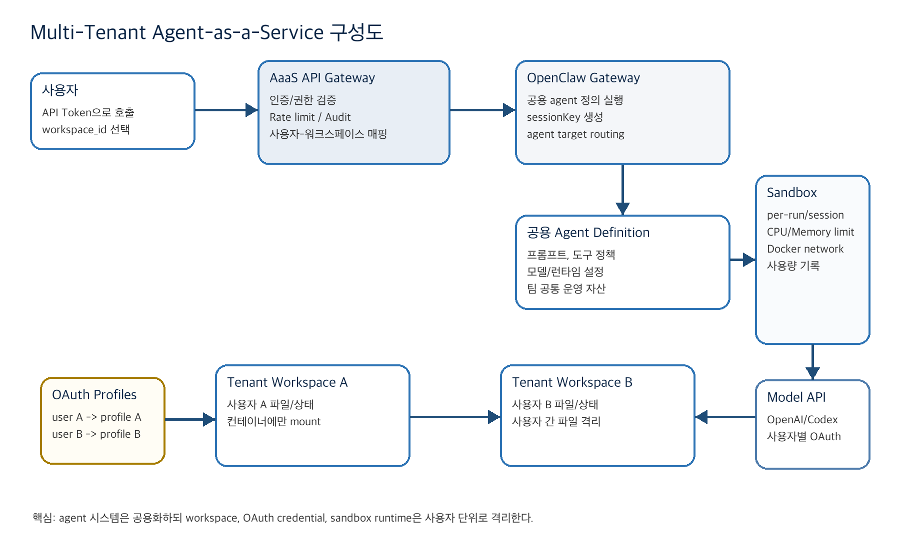

클라우드컴퓨팅 |
텀 프로젝트 1: 제안서 |
대표학생 이름 | 김성욱 |
대표학생 학번 | 202024191 |
대표학생 소속 학과/대학 | 정보의생명공학대학 정보컴퓨터공학부 |
분반 | 059 |
작성 방향 본 계획서는 OpenClaw를 기반으로 공용 agent 시스템, 사용자별 workspace, 사용자별 OAuth 인증, 컨테이너 격리 실행을 결합한 Multi-Tenant Agent-as-a-Service 플랫폼을 제안한다. |
[1] 개발 내용 소개 |
사용자별 Workspace와 OAuth 인증을 지원하는 OpenClaw 기반 Multi-Tenant Agent-as-a-Service 플랫폼 |
본 프로젝트는 OpenClaw를 로컬 개인 실행 도구가 아니라 퍼블릭 클라우드에서 상시 운영되는 공용 Multi-Agent-as-a-Service 플랫폼으로 확장하는 것을 목표로 한다. 사용자는 무거운 멀티에이전트 런타임을 각자 노트북에 설치하지 않고, API Gateway를 통해 팀이 공유하는 agent 시스템을 호출한다. 서비스의 핵심 아이디어는 agent 정의와 실행 플랫폼은 공용화하되, 실제 작업 상태는 사용자별 workspace로 분리하는 것이다. 동일한 코드 리뷰 agent를 호출하더라도 사용자 A는 A의 workspace에서, 사용자 B는 B의 workspace에서 작업하며, 각 실행은 Docker sandbox container 안에서 수행된다. 또한 OpenClaw가 제공하는 OpenAI/Codex OAuth 기반 모델 접근 기능을 재사용하되, 서비스 계층에서 사용자별 OAuth profile을 선택하는 Tenant-aware OAuth Routing 기능을 추가한다. 이를 통해 공용 agent 시스템을 사용하면서도 모델 사용 계정, workspace, 실행 컨테이너, 사용량 기록은 사용자 단위로 분리한다. 주요 개발 목표 • Agent API Gateway: 외부 사용자가 특정 agent를 REST/OpenAI-compatible API 형태로 호출할 수 있는 엔드포인트를 제공한다. • Tenant Workspace Router: 사용자 토큰과 workspace_id를 검증하고 서버 내부의 안전한 workspace 경로로 매핑한다. • OAuth Profile Router: 사용자별 OpenAI/Codex OAuth profile을 선택하여 모델 호출이 각 사용자의 인증 범위에서 수행되도록 한다. • Container Runtime Manager: agent 실행 도구와 workspace 접근을 Docker sandbox 안에서 수행하고 CPU, memory, network, idle cleanup 정책을 적용한다. • Usage/Audit Monitor: 요청 수, 실행 시간, 컨테이너 리소스 사용량, 사용자별 agent 사용 이력을 기록한다. |
[2] 필요성 및 활용방안 |
필요성 OpenClaw와 같은 멀티에이전트 시스템은 여러 agent, tool runtime, sandbox container, browser/tool process가 동시에 동작할 수 있어 로컬 PC에서 실행할 때 메모리와 CPU 부담이 크다. 팀 단위로 동일한 agent 시스템을 사용해야 하는 경우에는 각 구성원이 같은 설정을 반복 구축해야 하고, 개인 노트북의 성능 차이와 환경 차이로 인해 실행 결과와 운영 안정성이 달라질 수 있다. 또한 로컬 실행은 상시 가동이 어렵다. 노트북이 꺼지거나 네트워크가 끊기면 agent 시스템도 중단되며, 회사나 팀에서 공통으로 쓰는 자동화 agent를 중앙에서 관리하기 어렵다. 본 프로젝트는 이러한 문제를 해결하기 위해 agent 시스템을 클라우드에 상시 배포하고, 사용자는 가벼운 API client만으로 공용 agent를 호출하는 구조를 제안한다. 활용방안 및 Use-Case • 팀 공용 코드 리뷰 agent: 모든 팀원이 동일한 코드 리뷰 정책을 가진 agent를 사용하되, 각자 다른 repository workspace에서 결과를 받는다. • 문서 요약/보고서 작성 agent: 회사 또는 수업 팀이 공용 agent 정의를 관리하고, 사용자는 자신의 자료 workspace를 지정하여 요약 또는 초안을 생성한다. • 신규 구성원 온보딩: 로컬에 복잡한 OpenClaw 환경을 설치하지 않고 API token과 workspace만 발급받아 곧바로 agent를 사용할 수 있다. • 상시 자동화: 클라우드 Gateway가 24시간 실행되므로 예약 작업, 장시간 분석, 팀 공유 자동화를 안정적으로 수행할 수 있다. • 사용량 기반 비용 분석: 사용자별 요청 수, 컨테이너 실행 시간, CPU/memory 사용량을 기록하여 내부 비용 정산 또는 quota 정책의 근거로 활용한다. 기대효과 • 로컬 컴퓨터 자원 부담 감소: 사용자는 브라우저 또는 CLI/API client만 사용하고, 무거운 agent 실행은 클라우드가 담당한다. • 공용 agent 시스템 구축: 회사나 팀이 하나의 표준 agent 구성을 운영하여 반복 설치와 설정 불일치를 줄인다. • 상시 가동성 확보: 클라우드 환경에서 OpenClaw Gateway와 API Gateway를 운영해 agent 호출 가능 시간을 늘린다. • 격리성과 운영성 향상: 사용자별 workspace와 container를 분리하고 실행 로그와 리소스 사용량을 추적한다. |
[3] 선행기술 조사 |
선행기술 및 차별점 본 프로젝트는 OpenClaw의 agent routing, sandbox, OAuth 기능을 기반으로 하지만, 기존 OpenClaw를 그대로 배포하는 것이 아니라 SaaS 형태의 멀티테넌트 서비스 계층을 추가한다. 특히 사용자별 workspace와 OAuth profile을 자동 선택하는 기능은 공용 agent 시스템을 실제 팀 서비스로 운영하기 위한 핵심 차별점이다.
기존 OpenClaw 대비 차별점 • 기존 OpenClaw는 agent별 workspace와 sandbox를 지원하지만, public API 사용자를 tenant로 구분하는 SaaS 권한 모델은 별도 구현이 필요하다. • 본 프로젝트는 공용 agent definition을 유지하면서 사용자별 workspace, session, OAuth profile, container usage를 분리한다. • OpenClaw의 OpenAI-compatible API를 직접 외부에 공개하지 않고, 앞단에 인증/권한/사용량 추적을 담당하는 API Gateway를 둔다. |
[4] 제안하는 SW/시스템의 구성도 |
 구성 요소 • 사용자/API Client: 팀원이 브라우저, CLI, 또는 다른 백엔드에서 agent 실행을 요청한다. • AaaS API Gateway: 사용자 인증, workspace 소유권 검증, rate limit, audit log, OpenClaw 호출 중계를 담당한다. • Tenant/Workspace Router: user_id와 workspace_id를 기반으로 서버 내부의 /srv/agentaas/workspaces/{userId}/{workspaceId} 형태의 안전한 경로를 결정한다. • OAuth Profile Router: user_id에 매핑된 openai-codex OAuth profile을 선택한다. 사용자는 profile id를 직접 지정하지 못하고, 서버가 검증된 profile만 OpenClaw 실행에 전달한다. • OpenClaw Gateway: 공용 agent 정의, session routing, tool execution orchestration을 담당한다. • Docker Sandbox Container: agent의 실행 도구와 workspace 접근이 이루어지는 격리 실행 환경이다. CPU/memory limit, network policy, idle cleanup을 적용한다. 동작 흐름 1. 사용자가 API token과 workspace_id를 포함하여 agent 실행 요청을 보낸다. 2. API Gateway는 token을 검증하고 해당 사용자가 workspace_id를 사용할 권한이 있는지 확인한다. 3. Tenant Router는 사용자별 workspace 경로와 session key를 생성하고, OAuth Router는 사용자별 OpenAI/Codex profile을 선택한다. 4. OpenClaw Gateway는 model: openclaw/<agentId> 형태의 agent target으로 공용 agent 정의를 실행한다. 5. 실제 파일 접근과 tool execution은 사용자 workspace가 mount된 Docker sandbox container 안에서 수행된다. 6. 결과는 API Gateway를 통해 사용자에게 반환되며, 실행 시간과 리소스 사용량은 audit/usage log에 기록된다. |
[5] 동작 환경 |
동작 환경 기본 구현 대상은 퍼블릭 클라우드 VM 위의 Docker 기반 배포이다. 초기 단계에서는 AWS EC2, GCP Compute Engine, Azure VM 등 하나의 Linux VM에 Docker Engine과 OpenClaw Gateway, AaaS API Gateway, 사용자별 workspace volume을 구성한다. 이를 통해 로컬 PC 자원 부담을 줄이면서도 구현 난이도를 수업 프로젝트 범위 안에 유지한다. 기본 배포 • Cloud VM: OpenClaw Gateway, API Gateway, Docker daemon, workspace volume, log storage를 운영한다. • Docker Sandbox: agent 실행 시 사용자별 workspace를 mount하고 CPU/memory/network 정책을 적용한다. • Reverse Proxy: HTTPS, API token 인증, 요청 크기 제한, rate limit을 담당한다. • Local Client: 사용자는 브라우저, curl, Python client, 또는 OpenAI-compatible client를 통해 agent를 호출한다. 확장 배포 • 컨테이너 사용량 측정과 idle cleanup을 구현한 뒤, ECS Fargate, Cloud Run, Azure Container Apps 같은 서버리스 컨테이너 서비스로 agent sandbox 실행을 확장한다. • 이 경우 VM 단위 고정 비용이 아니라 container task 실행 시간과 할당 리소스 기준의 비용 모델에 더 가까워진다. 개발 범위 • 1차 목표: Cloud VM + Docker Compose 기반 POC, 두 명 이상의 사용자, 두 개 이상의 workspace, 사용자별 OAuth profile routing 검증 • 2차 목표: agent별/사용자별 사용량 대시보드, 컨테이너 리소스 제한 및 자동 정리, mock LLM 기반 테스트 • 제외 범위: 로컬 workspace bridge, 모바일/라즈베리파이 실행, 완전한 상용 billing 시스템 |